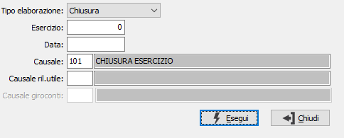

Annullamento chiusura/apertura
Il programma consente l’annullamento della chiusura o dell’apertura dell’esercizio contabile. Il programma aggiorna le scritture contabili, i protocolli contabili, e storna i saldi dei conti.

TIPO ELABORAZIONE: combo box per scegliere l’annullamento che si vuole effettuare. Valori ammessi: Chiusura; Apertura, Giroconti apertura.
ESERCIZIO: campo numerico per definire l’esercizio di cui si desidera effettuare l’annullamento.
DATA: inserire la data con la quale si era aperto o chiuso l’esercizio inserito.
CAUSALE: definisce la causale con cui sono stati generati i movimenti di chiusura o di apertura dell’esercizio che si desidera annullare. Sul campo sono attive le funzioni di ricerca (F9).
CAUSALE RIL. UTILE: campo attivo solo in fase di annullamento dei movimenti di chiusura, definisce la causale con cui sono stati generati i movimenti rilevazione utile o perdita dell'esercizio che si desidera annullare, la causale deve essere indicata per annullare il movimento di rilevazione utile/perdita nel caso in cui questo movimento non sia stato generato con la stessa causale dei movimenti di chiusura. Sul campo sono attive le funzioni di ricerca (F9).
Causale giroconto ratei/risconti: identifica la causale contabile utilizzata in fase di apertura, o tramite la procedura di Generazione giroconti apertura, per generare i giroconti.